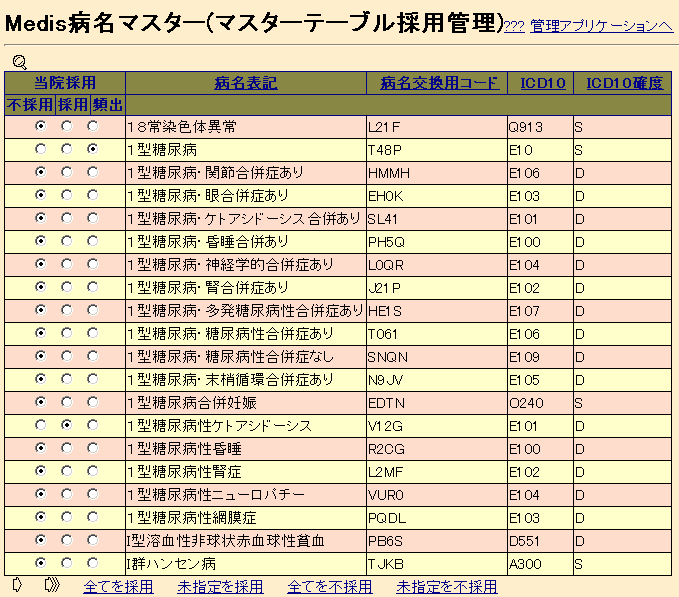

「マスターテーブル採用管理」アプリケーションは、外部で用意さ れたマスターテーブルの各行を本院で採用とするか不採用とするかを設 定するのに用いるツールです。

ページの先頭には、選択しているテーブル名が表示されます。 例では「Medis病名マスター」マスターの採用を管理しています。
ページに表示されるリストの先頭には、虫めがね型の絞り込み検索 のコントロールがあります。
ページの中部分には、マスターの内容を表示し、それぞれの行につ いて不採用・採用・頻出をラジオボタンによって指定するのに使う、 「マスタ表示テーブル」があります。
マスターの内容全体は一度には表示できませんから、「マスタ表示 テーブル」には一度に一ページ分だけを表示します。ページの一番下に 表示するコントロールで、今表示しているページに表示された行の採用・ 不採用を決定し、ページめくりをすることができます。
絞り込み条件に使えるデータベースのテーブル欄名の下に絞り込み 条件を書くことができます。
先頭に「=」「>=」「>」「<」「<=」を書くと、その欄の値と指定 された値とを比較してその結果が真である行だけを選びます。
（例）「=D」と「ICD10 確度」欄に書くと、「ICD10確度」欄 の値が「D」である行のみが選択されます。
先頭に「~」を書くと、その欄の値が指定された文字列を含む 行だけを選びます。また、先頭に「^」を書くと、その欄の値が指定さ れた文字列から始まる行だけを選びます。
（例）「~肝炎」と「病名表記」欄に書くと、「病名表記」欄 に「肝炎」という部分文字列を含む行のみが選択されます。
先頭が上記の記号でない場合には、先頭に「~」と書いたのと同じ ことになります。デフォールトでは部分一致検索する、ということです
（例）「病名表記」欄「ＨＩＶ」とだけ書けば、 「病名表記」欄の値が「ＨＩＶ」という文字列で始まる行の みを選択することができます。もちろん、「^」付きで「^ＨＩＶ」と書 いても構いません。
先頭に「!」を書くと、通常の絞り込み条件を反転します。
（例）「!=D」と「ICD10 確度」欄に書くと、「ICD10確度」欄 の値が「D」でない行のみが選択されます。
上記の特殊文字は全て半角英字で書くことに注意してください。絞 り込み条件を書いて、虫めがねの「条件を追加して再検索」ボタンを押 すことで、新しい条件が絞り込み条件に加えられます。絞り込み条件を ゆるめるには、虫めがねに斜線の「条件を解除」ボタンを押します。
絞り込みを行なっている最中に、さらに別の条件を入力して検索を繰り返すことで、対話的に絞り込み結果をさらに絞ってゆくことができます。ただし、欄の内容によっては、今有効である検索条件を新しい入力内容で置きかえて検索するものもあります。例えば、「男性だけ検索」として絞っている結果を、さらに「女性だけに絞る」というのは無意味ですから、そういう場合には、「男性だけ、に絞るのは止めて、こんどは女性だけに絞る」となります。こういう欄は頭書きのラベルに付けてある背景色が他の欄と異なることで区別できます。
マスタ表示テーブルには、一行に一レコードずつ、マスタの内容を 表示します。
マスタの内容のうち、編集できるのは「不採用・採用・頻出」の欄 のみです。まだ決定していない行についてはどのラジオボタンも点いて いません。
表の最下部に表示される矢印は他のリストを表示するアプリケーショ ンと同様のページめくりです。マスタ表示テーブルでラジオボタンを変 更した後ページめくりして別のページに移動すると、同時に変更が記録 されます。
また、ページめくりの他に、表の最下部には「全てを採用」等のボ タンがあります。これらはマスターテーブルの行のうち、現在表示され ているページにある行についてまとめて選択処理を行なうのに使います。 ページめくりせずに表でした個々の変更を記録するには、これらのボタ ンの内の「ページ移動せずに記録」を使います。